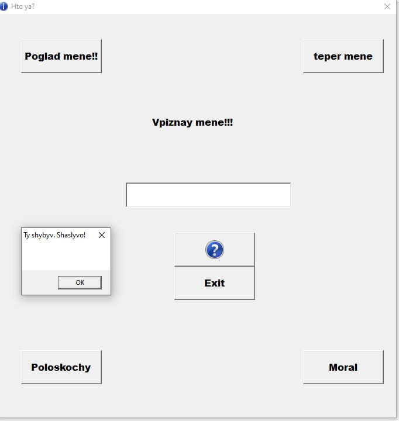

Про ассемблер
Возможно, у вас есть курсы ассемблера. Поначалу у меня были проблемы с изучением языка, и я обнаружил, что многие уроки по ассемблеру особо не помогают.
На самом деле, почти никто из них не объяснял это с точки зрения новичка, и они были крайне расплывчатыми. Я нашел только один урок, который действительно указал мне в правильном направлении, и это было руководство https://www.youtube.com/@tempestatorres5243/playlists, хотя в его уроке местами есть несколько дыр, что делает его своего рода непрактично.
Итак, этот веб-сайт представляет собой попытку помочь начинающему уровню, чтобы помочь избежать всех этих расплывчатых руководств. Если у вас есть какие-либо вопросы или какие-либо советы или отзывы, которыми вы хотите поделиться, не стесняйтесь обращаться ко мне.

Про C
Ассемблер — это язык программирования низкого уровня, который предоставляет программистам возможность прямого управления аппаратными средствами компьютера. В отличие от языков высокого уровня, таких как Python или Java, ассемблер требует точного понимания архитектуры процессора и системы команд, что делает его сложным для изучения и использования. Однако, именно благодаря этому ассемблер позволяет писать программы с максимальной производительностью и минимальными ресурсными затратами, что особенно важно в системах реального времени и встраиваемых системах.

Услуги репетитора по языку ассемблер могут быть невероятно полезны для студентов и профессионалов, стремящихся углубить свои знания в области системного программирования. Опытный репетитор поможет понять основные концепции и техники работы с ассемблером, такие как адресация памяти, управление регистрами и использование макроинструкций. Также репетитор сможет объяснить особенности различных процессорных архитектур, что является ключевым для написания эффективного и оптимизированного кода.
Занятия с репетитором по ассемблеру включают в себя не только теоретическое обучение, но и практические задания, которые помогут закрепить полученные знания. Репетитор может предложить индивидуальный подход, адаптируя программу обучения под конкретные цели и уровень подготовки ученика. Это позволяет быстрее освоить язык и начать применять его на практике для решения реальных задач, будь то разработка драйверов, создание операционных систем или оптимизация приложений для встраиваемых устройств.
Проекты
-
 Занятия с репетитором по ассемблеру включают в себя не только теоретическое обучение
Занятия с репетитором по ассемблеру включают в себя не только теоретическое обучение
-
 Занятия с репетитором по ассемблеру включают в себя не только теоретическое обучение
Занятия с репетитором по ассемблеру включают в себя не только теоретическое обучение
-
 Занятия с репетитором по ассемблеру включают в себя не только теоретическое обучение
Занятия с репетитором по ассемблеру включают в себя не только теоретическое обучение
-
 Занятия с репетитором по ассемблеру включают в себя не только теоретическое обучение
Занятия с репетитором по ассемблеру включают в себя не только теоретическое обучение
- Проект masm32 Ассемблер
-  Проект MASM
- Проект MASM Ассемблер
Обучение

Услуги репетитора по языку ассемблер могут быть невероятно полезны для студентов и профессионалов, стремящихся углубить свои знания в области системного программирования. Опытный репетитор поможет понять основные концепции и техники работы с ассемблером, такие как адресация памяти, управление регистрами и использование макроинструкций. Также репетитор сможет объяснить особенности различных процессорных архитектур, что является ключевым для написания эффективного и оптимизированного кода.
Занятия с репетитором по ассемблеру включают в себя не только теоретическое обучение, но и практические задания, которые помогут закрепить полученные знания. Репетитор может предложить индивидуальный подход, адаптируя программу обучения под конкретные цели и уровень подготовки ученика. Это позволяет быстрее освоить язык и начать применять его на практике для решения реальных задач, будь то разработка драйверов, создание операционных систем или оптимизация приложений для встраиваемых устройств.
Чуть обо мне